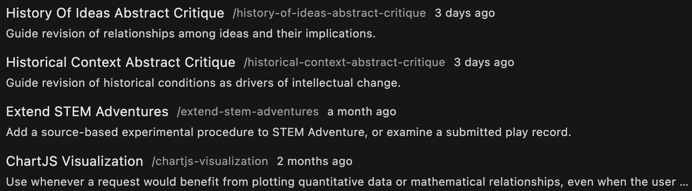
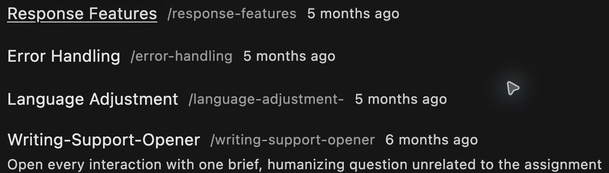
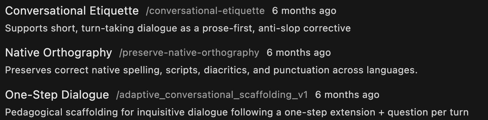
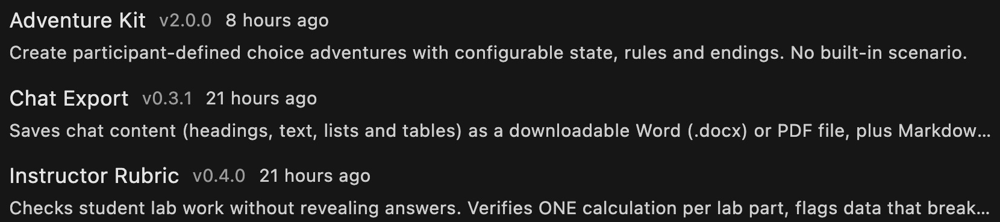
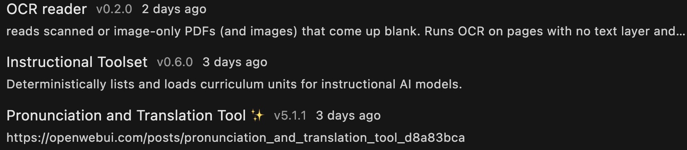
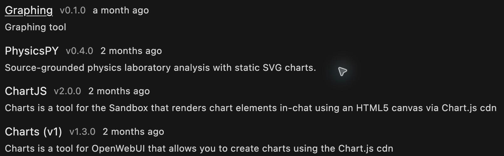
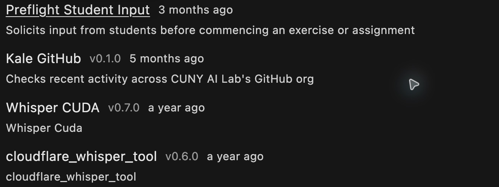
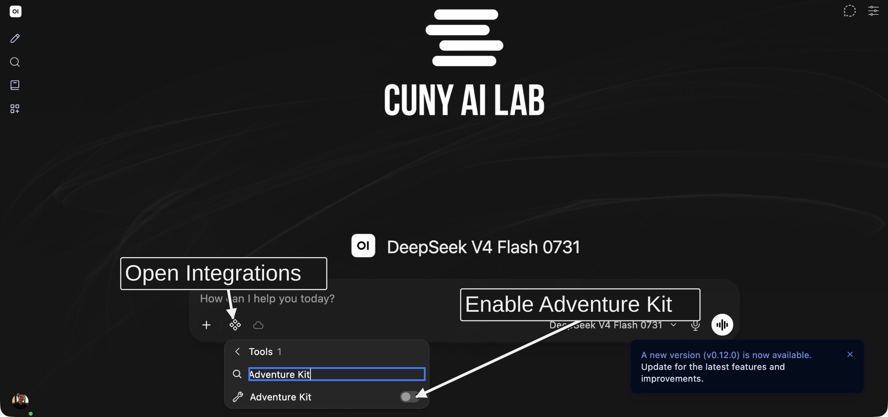

Configuring skills and tools

Alt text: CUNY AI Lab
New Media Lab · Room 7388.01
CUNY Graduate Center
Choose Your Own Adventure
Continue your saved model, or clone STEM Adventure Games
Read its system prompt for setting, goals, and rules
Clone instructions · Adventure example

Alt text: Saved model in chat with model selector below message box
What Is a Skill?
Skill Examples
Workspace → Skills · 1 of 3
Examples from the host’s catalog. Your list depends on access

Alt text: Current skills catalog entries: History Of Ideas Abstract Critique, Historical Context Abstract Critique, Extend STEM Adventures, ChartJS Visualization. Interface screenshot captured October 15, 2026.
Skill Examples
Workspace → Skills · 2 of 3
Examples from the host’s catalog. Your list depends on access

Alt text: Current skills catalog entries: Response Features, Error Handling, Language Adjustment, Writing-Support-Opener. Interface screenshot captured October 15, 2026.
Skill Examples
Workspace → Skills · 3 of 3
Examples from the host’s catalog. Your list depends on access

Alt text: Current skills catalog entries: Conversational Etiquette, Native Orthography, One-Step Dialogue. Interface screenshot captured October 15, 2026.
Add Your Skill
Add Skill Instructions
Test Your Skill
What Is a Tool?
Tool Examples
Workspace → Tools · 1 of 4
Examples from the host’s catalog. Your list depends on access

Alt text: Current tools catalog entries: Adventure Kit, Chat Export, Instructor Rubric. Interface screenshot captured October 15, 2026.
Tool Examples
Workspace → Tools · 2 of 4
Examples from the host’s catalog. Your list depends on access

Alt text: Current tools catalog entries: OCR reader, Instructional Toolset, Pronunciation and Translation Tool. Interface screenshot captured October 15, 2026.
Tool Examples
Workspace → Tools · 3 of 4
Examples from the host’s catalog. Your list depends on access

Alt text: Current tools catalog entries: Graphing, PhysicsPY, ChartJS, Charts (v1). Interface screenshot captured October 15, 2026.
Tool Examples
Workspace → Tools · 4 of 4
Examples from the host’s catalog. Your list depends on access

Alt text: Current tools catalog entries: Preflight Student Input, Kale GitHub, Whisper CUDA, cloudflare_whisper_tool. Interface screenshot captured October 15, 2026.
Check Tool Binding
Add the ‘Adventure Kit’ tool
Open Integrations → Tools
Search Adventure Kit and select its toggle

Alt text: Chat Integrations Tools menu with Adventure Kit toggle; arrows identify relevant steps without changing interface pixels
Prepare Your Adventure
Add Tool Instructions
Test Your Tool
Choose Your Task
Work With Support
Open CAIL Workspace Support
Paste original content or your new task, system prompt, and required sources
Request complete content, an explanation, and one test · Copy request

Alt text: CAIL Workspace Support model identity with surrounding sidebar
Add Tools or Skills
Create a new tool or skill, or save a revised copy
Use Workspace → Tools → Create or Skills → Create
Enter new Name and ID; paste complete reviewed content
Review Access, then Save & Create · Select and test your item
Alt text: Tools Create form with code editor, Access and Save & Create visible; arrows identify relevant steps without changing interface pixels